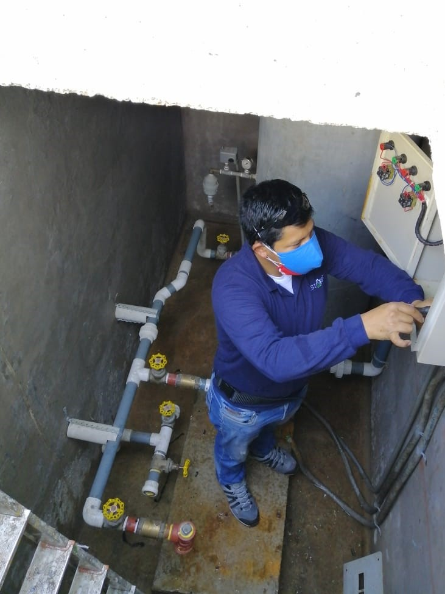
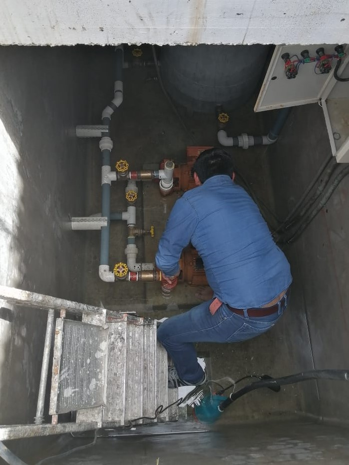

Trabajos realizados




Ingeniería en Sistemas Industriales y Energía Renovable
Servicio técnico para diagnóstico, reparación y mantenimiento de bombas de agua y sistemas hidroneumáticos en edificios, conjuntos residenciales, casas, locales comerciales y pequeñas empresas. Atendemos problemas de presión de agua, bombas dañadas, equipos que prenden y apagan constantemente, ruido, vibración o fugas.
Revisión integral de bombas para edificios, conjuntos residenciales, casas y comercios: presiones de trabajo, tablero de control, conexiones y estado general de componentes.
Diagnóstico de bombas con fallas de arranque, baja presión de agua, funcionamiento irregular, ruido, vibración, fugas o falta de suministro.
Reparación y mantenimiento de sistemas hidroneumáticos que no mantienen presión, presentan ciclos inestables o afectan el abastecimiento de agua.
Revisión técnica para corregir baja presión, edificio o casa sin agua, arranques frecuentes y fallas asociadas al sistema de bombeo.


Solicite diagnóstico, reparación de bombas en Quito o mantenimiento preventivo de su sistema de agua.